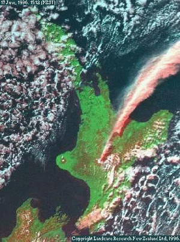
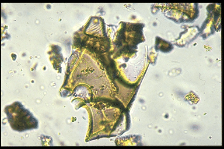

Dating the Quaternary
Bio250
Richard J. Telford
29 October 2025
Why date?
Without dates:
- Things changed
- Order of events
With dates:
- When?
- How fast?
- What happened at the same time?
- Hypothesis testing
Introduction
Absolute chronology is the basis for all comparison and correlation of Holocene proxy records.
Avoid visual ‘curve-matching’
‘reinforcement syndrome’
‘suck-in and smear’
Mostly 14C dating and 210Pb dating.
Tephras increasingly important.
Holocene-length annually laminated sediments rare.
Types of chronologies
Relative vs Absolute
Incremental
- Varved sediments
Radiometric
- Radiocarbon
- Lead-210
Stratigraphic
- Tephra layers
Varved Lake Sediments
- How are they formed & preserved?
- What types of lakes have varved sediments?
- Techniques
- Can they be proved to be annual?
Varve formation and preservation
1 Seasonal variation in the type of sediment deposited
- grain size in pro-glacial lake
- biological remains
- calcite
2 Sediment water interface undisturbed
- by waves & currents
- by bioturbation
- by slumping
Sagtjennet, Norway
Lake Characteristics
Varves in Marine Environments
Common in enclosed marginal seas
- Saanich Inlet, British Columbia
- Baltic Sea
- Black Sea
- Cariaco Basin
- Also under up-welling zones
Why not in most of the ocean?
Techniques
Coring – need continuous sequence
Frozen finger to sample sediment water interface
Embed in epoxy resin to make thin sections
Evidence that varves are annual
Radiometric dates
Pollen
Microstratigraphy
Baldeggersee, Switzerland
Hypertrophic lake
Cored with freeze-corer
Diatoms counted at
annual resolution
Baldeggersee, Switzerland
Radiocarbon Dating
14C Principles

Developed by Libby
98.9% of carbon atoms have nucleus with 6 protons and 6 neutrons: 12C
1.1% have 6 protons, 7 neutrons: 13C
12C & 13C are stable
14C: 1 in 1012 atoms
- 8 neutrons
- radioactive
- half-life of 5730 years
Can date organics and carbonates
Origin of 14C
- Cosmic radiation hits upper atmosphere
- Nuclei broken into high-energy nucleotides
- 14C formed by exchange of p for n in Nitrogen atom
- 14C absorbed by biomass and moves through the food chain
Everything is radioactive
Beta decay of 14C
\(^{14}C \longrightarrow {^{14}N} + β + \bar{v}_e\)
β – Beta-particle – high energy electron
\(\bar{v}_e\) electron antineutrino – very difficult to detect
Random process
Atom has 50% chance of decaying in one half-life
Exponential decay
Measuring 14C
1 Count the disintegrations
- Detect β particles
- Radiometric or bulk date
- Needs 1 g carbon
2 Count the atoms
- Accelerated Mass Spectrometer
- Needs 1 mg carbon
- Can date specific sediment fractions
Calculating 14C Age
\(\frac{dA}{dt} = -\lambda A\)
\(A = A_{initial}e^{-\lambda t}\)
\(\lambda = \frac{ln(2)}{halflife}\)
\(A = A_{initial}e^{-ln(2)\frac{age}{halflife}}\)
\(ln(\frac{A}{A_{initial}})=-ln(2)\frac{age}{halflife}\)
\(age = -ln(\frac{A}{A_{initial}})\frac{halflife}{ln(2)}\)
Use Libby halflife 5568
\(age = -8033 ln(\frac{A}{A_{initial}})\)
assume \(A_{initial} = A_{modern}\)
\(age= -8033 ln(\frac{A}{A_{modern}})\)
Assumptions
1 No contamination
- rootlets
- recrystallisation
- bioturbation
- coal & peat
2 14C in organism is in equilibrium with atmosphere at death
- fractionation
- marine reservoir effect
- hardwater error
3 Atmospheric 14C concentration is constant
Isotopic fractionation
14C is heavier & slower than 12C
discriminated against by photosynthesis
13C also discriminated against
normalise to \(\delta ^{13}C = -25 ‰\)
16 yr offset per 1 ‰
| Material | \(\delta ^{13}C ‰\) |
|---|---|
| Marine shells | +1 ± 2 |
| Speleothems | -9 ± 3 |
| C-4 plants | -10 ± 2 |
| Marine organics | -15 ± 3 |
| Submerged freshwater plants | -16 ± 4 |
| C3 plants, wood | -25 ± 3 |
Marine reservoir effect
- Ocean contains lots of C
- Exchange with atmosphere is slow
- 14C decays before exchange
- →Average apparent age of marine organisms 400 yr too old
What is the 14C age of these sheep?
How could you tell that the dates were problematic?
Marine reservoir effect varies in space
\(\Delta R\) - offset from typical reservoir age http://calib.org/marine/

And varies in time
Marine and terrestrial macrofossils in same core
Difference between marine & terrestrial 14C dates varies
Hard-water error
- Catchment carbonates (e.g. chalk, limestone) dissolve
- Rock is millions of years old - no 14C
- Aquatic plants photosynthesise using “old” carbon
- Apparent age older than true age
- Solve by dating terrestrial macrofossils or pollen
Is atmospheric 14C concentration constant?
“Curve of Knowns” Libby and Arnold (1949)
- First 14C dates near expected
- More dates showed divergence
- Who was right, the archaeologists or the physicists?
Dendrochronological evidence
Also macrofossils in varved lakes
Corals dates with 14C and U/Th dating
Calibration Curves
- IntCal20: Northern hemisphere
- SHCal20: Southern hemisphere
- Marine20: Marine
0–55000 yr BP
Why does atmospheric 14C vary? 1
Variable production
- 14C is produced by cosmic radiation
- Cosmic radiation is high energy charged particles
- Magnetic fields deflect charged particles, shielding objects behind them
- Variations in the sun’s or the earth’s magnetic field changes the amount of shielding, and the production rate of 14C
The Changing Sun
X-ray images of the sun over half a sunspot cycle (1991-1995)
Why does atmospheric 14C vary? 2
Carbon cycle changes
- Change distribution of 14C in the biosphere
- rate of ocean turnover
- global vegetation changes
Radiocarbon calibration
Convert radiocarbon dates to calibrated dates

- Oxcal
- Bchron
- rbacon
Dating sediment < 150 years old
Period of massive human impact
on the environment
- acid rain
- eutrophication
- climate change
Methods
- Nuclear bomb-derived 14C
- 210Pb
- Fallout isotopes
Postbomb-calibration curve
Why did the curve rise?
Why did it decline?
Lead-210 dating
- 210Pb is part of the 238U decay chain
- half-life of 22 years
- Useful for last ~100 years
- Aquatic sediments
Sources of 210Pb in sediment
Supported vs. unsupported 210Pb
Simple model
Constant flux:constant sedimentation rate
Øvre Neådalsvatn, Norway
More complex models
More complex models with different assumptions available
- CRS – constant rate of supply of 210Pb
- CIC – 210Pb initial concentration is constant
Gossenköllesee, Austria
Validation
Different models, different dates - use independent dates to validate chronology
- 137Cs - Atmospheric nuclear bomb test & Chernobyl - 1986
- 241Am Atmospheric nuclear bomb test - peak 1963
Tephra - correlation between sites

Finding tephra
Saksunarvatn Ash, Faroe Islands
 Saksunarvatn ash, Dallican Water, Shetland
Vedde Ash Bed, Kvaltjern, Sotra
Identifying tephra
- colour
- morphology
- geochemistry
Vedde Ash
Icelandic tephra (? Katla Volcano)
Middle of Younger Dryas
Greenland ice – GRIP ice core 11980 ± 80 yr BP
lake cores Kråkenes 10310 ± 50 14C yr BP
calibrated 12140 ± 200 cal yr BPmarine cores Norwegian coast 10920 ± 24 14C yr BP
Reservoir correction 610 ± 55 yr
Larger than modern
What else can we date?
- Speleothem & Corals - U/Th
- Sand dunes - luminesence dating - last exposure to sunlight
- Exposure dating - cosmogenic radioisotopes
- Lava - Ar-Ar dating
- Shells & bones - amino acid racemisation
Conclusions
| Method | Age range | + | - |
|---|---|---|---|
| Varves | 100–20000 |
|
|
| 14C | 0–50000 |
|
|
| 210Pb | <150 |
|
|
| Tephra | Any |
|
|
Reading
Varves: Zolitschka et al (2015) Varves in lake sediments - a review. Quat. Sci. Rev. 117, 1–41
Radiocarbon: Reimer et al (2020) The IntCal20 Northern Hemisphere Radiocarbon Age Calibration Curve (0–55 cal kBP) Radiocarbon 62, 725-757
Age depth models: Trachsel and Telford (2017) All age–depth models are wrong, but are getting better. Holocene 27, 860–869
210Pb dating: Appleby (2008) Three decades of dating recent sediments by fallout radionuclides: a review. Holocene 18, 83–93
Cryptotephra: Davis (2015) Cryptotephras: the revolution in correlation and precision dating. J. Quat. Sci. 30, 114–130.